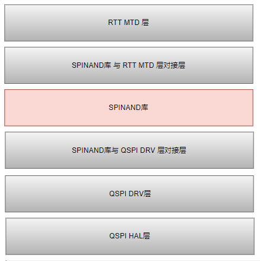
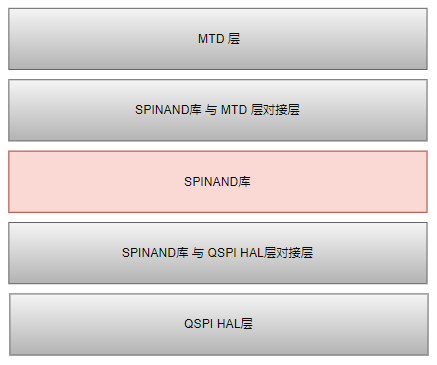

SPI NAND 使用指南
18 Dec 2024
Read time: 1 minute(s)
本文档介绍如何使用 SPI NAND 模块，该模块实现了对 SPI NAND 设备的驱动，向上提供 SPI NAND 操作的 API，向下对接 QSPI 总线。
| 术语 | 定义 | 注释说明 |
|---|---|---|
| SPI | Serial Peripheral Interface | 标准串行外设接口 |
| DUAL SPI | Dual Serial Peripheral Interface | 2 线 data 传输，串行外设接口 |
| QUAD SPI | Quad Serial Peripheral Interface | 4 线 data 传输，串行外设接口 |
SPI NAND 模块可以支持在 RTT 中使用，也支持在 Baremetal 环境下使用。
图 1. SPI NAND 模块在 RTT 中应用


功能特性
-
支持 1/ 2/ 4 线 QSPI